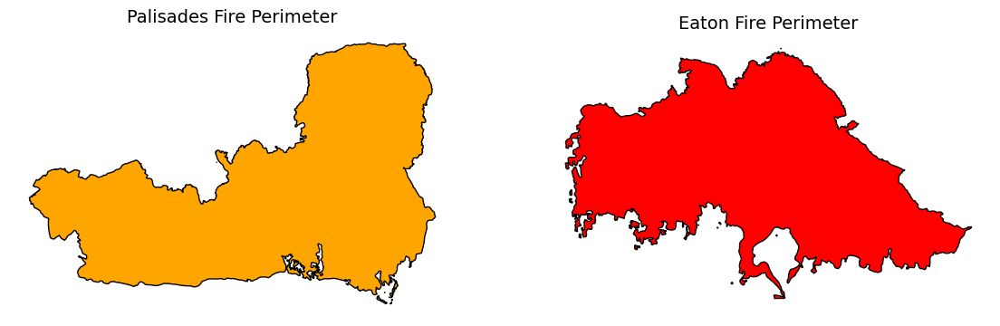
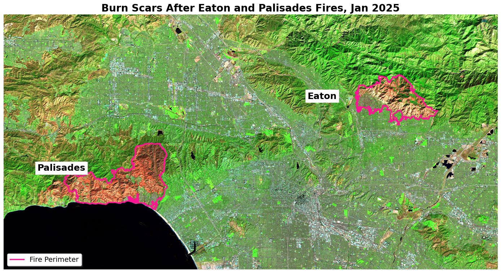
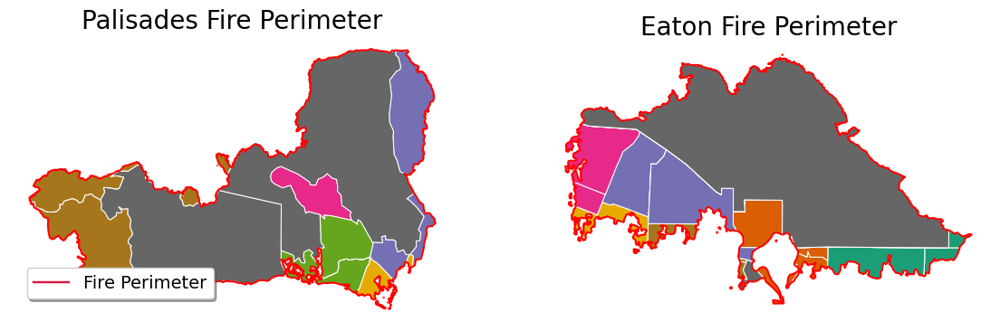
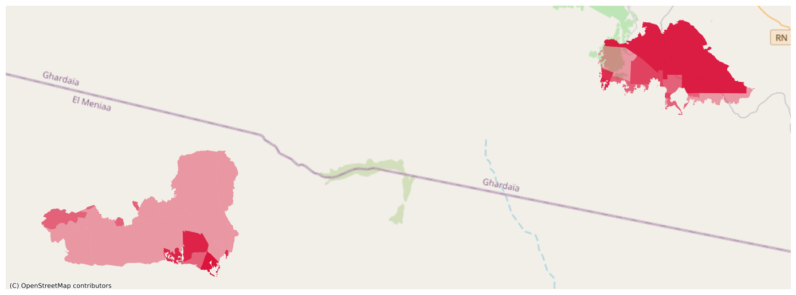
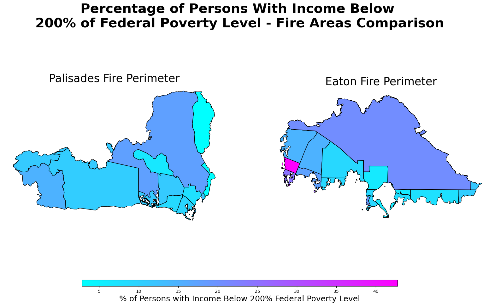

# Import Libraries
import os
import pandas as pd
import numpy as np
import geopandas as gpd
from matplotlib.lines import Line2D
import matplotlib.pyplot as plt
import xarray as xr
import rioxarray as rioxr
import contextily as ctxVisualizing the Eaton and Palisades Fires and the Social Dimensions of Wildfire Risk in California
About
This repository contains files for the ‘Working with Environmental Datasets’ course (EDS 220), Homework 4, task 2. The Jupyter notebook hwk4-task2-false-color-Morquecho.ipynb contains a python analysis and visualization of the data mentioned below using false and true color imagery to show the burn areas of the January 2025 Palisades & Eaton fires in California.
Repository Structure
├── .gitignore
├── hwk4-task2-false-color-Morquecho.ipynb
├── README.mdPurpose
The purpose of this repository is to use netCDF4 data files, accessed with the xarray library, to visualize the burn scars from the Eaton and Palisades fires that occurred in January of 2025.
Highlights
- Use the
xarraylibrary to streamline analysis ofnetCDF4files containing multidimensional data - Use false color imagery to highlight burn areas after California wildfires
- Address common remote sensing data issues such as extreme and
np.nanvalues that distort data visualizations
About the Data
Fire perimeter data are sourced from the eGIS LA County hub, and can be accessed and downloaded by selecting the desired layer and clicking ‘Download’. Dataset for the layer
Eaton_Perimeter_20250121contains the.shpfile of the Eaton Fire dissolved perimeter, whilePalisades_Perimeter_20250121contains the Palisades Fire dissolved perimeter. Both datasets are in theEPSG:3857CRS.Landsat data was provided by the course instructor, Dr. Carmen Galaz Garcia, as a simplified collection of bands (red, green, blue, near-infrared, and shortwave infrared). The data comes from the Landsat Collection 2 level-2 atmospherically corrected surface reflectance data, which is collected by the Landsat 8 satellite. The original data and other related datasets can be retrieved from the Microsoft Planetary Computer. The data is in the
EPSG:32611CRS.The Environmental Justice Index (EJI), produced by the Centers for Disease Control and Prevention and the Agency for Toxic Substances and Disease Registry, provides nationwide measures of cumulative environmental, social, and health burden at the census tract scale. The dataset combines indicators related to environmental exposures, underlying health conditions, and socioeconomic vulnerability to identify communities that may face disproportionate environmental and health risks. The data can be accessed and downloaded from the CDC website. The data is in the
EPSG:4269CRS.
References
Los Angeles County GIS. (2025). Palisades and Eaton Dissolved Fire Perimeters (2025) [Data layer]. eGIS LA County Hub. https://egis-lacounty.hub.arcgis.com/maps/lacounty::palisades-and-eaton-dissolved-fire-perimeters-2025/about. Accessed November 22, 2025, via ArcGIS: https://www.arcgis.com/home/item.html?id=ad51845ea5fb4eb483bc2a7c38b2370c
Earth Resources Observation and Science (EROS) Center. (2025). Landsat 8-9 Operational Land Imager / Thermal Infrared Sensor Level-2, Collection 2 [dataset]. U.S. Geological Survey. https://doi.org/10.5066/P9OGBGM6. Accessed November 22, 2025, via Microsoft Planetary Computer: https://planetarycomputer.microsoft.com/dataset/landsat-c2-l2.
Centers for Disease Control and Prevention and Agency for Toxic Substances Disease Registry. (2025) Environmental Justice Index. Accessed November 28, 2025: https://atsdr.cdc.gov/place-health/php/eji/eji-data-download.html
Import Libraries and Load Datasets
Aside from the standard libraries such as numpy and matplotlib, the following specialized libraries were used in this analysis: - xarray to access and analyze netCDF4 files (multidimensional datasets) - rioxarray to extend xarray with the rio accessor to read and manipulate raster data - contextily to add basemaps to geospatial visualizations - geopandas to handle vector data such as shapefiles
Import Data
pd.set_option('display.max_columns', None)
# Fire Perimeter Data
eaton = gpd.read_file(os.path.join('data','Eaton_Perimeter_20250121','Eaton_Perimeter_20250121.shp')) # Eaton Fire Perimeter
palisades = gpd.read_file(os.path.join('data','Palisades_Perimeter_20250121','Palisades_Perimeter_20250121.shp')) # Palisades Fire Perimeter
# Landsat NetCDF File
landsat = xr.open_dataset(os.path.join('data','landsat8-2025-02-23-palisades-eaton.nc'))
# California 2024 EJI Data
eji_data = gpd.read_file(os.path.join('data','EJI_2024_California','EJI_2024_California.gdb'))Explore Fire and Landsat Datasets
I begin the analysis by exploring the datasets I will use to understand their structure and contents. It is important to be familiar with the dimensions, variables, indexes,and attributes of the NetCDF4 file. NetCDF4 files, in particular, can contain multiple variables stored as multidimensional arrays, along with metadata that describes the data.
Landsat Data Exploration
# Explore landsat data (see attributes, variables, and dimensions)
landsat<xarray.Dataset> Size: 78MB
Dimensions: (y: 1418, x: 2742)
Coordinates:
* y (y) float64 11kB 3.799e+06 3.799e+06 ... 3.757e+06 3.757e+06
* x (x) float64 22kB 3.344e+05 3.344e+05 ... 4.166e+05 4.166e+05
time datetime64[ns] 8B ...
Data variables:
red (y, x) float32 16MB ...
green (y, x) float32 16MB ...
blue (y, x) float32 16MB ...
nir08 (y, x) float32 16MB ...
swir22 (y, x) float32 16MB ...
spatial_ref int64 8B ...# Check units of landsat data coordinates
print(f'x coordinates have unit: {landsat["x"].attrs.get("units")}')
print(f'y coordinates have unit: {landsat["y"].attrs.get("units")}')x coordinates have unit: metre
y coordinates have unit: metreLandsat Data Exploration Summary
I explore the Landsat NetCDF xaaray dataset (landsat8-2025-02-23-palisades-eaton.nc), which contains multiple variables: spectral bands (red, green, blue, nir08, swir22) stored as 2D arrays with dimensions (1418,2742) collected by the Landsat 8 satellite. The dataset includes a time coordinate (containing just one value given that the data is from Feb 23, 2025) and a spatial_ref attribute. Both x and y coordinates are in metres, confirming that the data is projected in a UTM projected coordinate system.
Fire Perimeter Data Exploration
I explore the fire perimeter data to find their CRS, compatibility with one another, and other relevant attributes.
# Check Eaton fire perimeter data's CRS
print(eaton.crs)
# Verify that Eaton fire perimeter data is on same CRS as the Palisades fire perimeter data
assert(eaton.crs==palisades.crs) # Assert test confirms that they are on the same CRS system (EPSG 3857)EPSG:3857# Check if Eaton and Palisades datasets are projected
print(f"The Eaton fire perimeter dataset projected: {eaton.crs.is_projected}")
print(f"The Palisades fire perimeter dataset projected: {palisades.crs.is_projected}")The Eaton fire perimeter dataset projected: True
The Palisades fire perimeter dataset projected: True# Check Eaton dataset's columns and their data types
eaton.dtypesOBJECTID int64
type object
Shape__Are float64
Shape__Len float64
geometry geometry
dtype: object# Check Palisades dataset's columns and their data types
palisades.dtypesOBJECTID int64
type object
Shape__Are float64
Shape__Len float64
geometry geometry
dtype: objectpalisades.plot()
eaton.plot()

Fire Perimeter Data Exploration Summary
I explore the fire perimeter datasets for both the Eaton and Palisades fires, obtained from LACounty’s ArcGIS Hub. The datasets contain the dissolved fire perimeters, as of January 21, 2025, share the same coordinate reference system (EPSG 3857), and are projected. Each dataset contains columns for OBJECTID, type, Shape__Are, Shape__Len, and geometry. It is interesting and alarming to see how extensive the fires (and therefore, their perimeters) were, especially given that they gained so much territory within 24 hours.
Restore Landsat Geospatial Information
# Check dataset's CRS using the rio accessor
print(landsat.rio.crs)NoneWhile we cannot access the CRS in Landsat, that does not mean the dataset is not a geospatial object. I can access the spatial_ref.crs_wkt attribute of the dataset and print the CRS.
# Access and extract spatial_ref.crs_wkt attribute and store in variable
landsat_crs = landsat.spatial_ref.crs_wkt
type(landsat_crs) # Check that it is an acceptable object for next step ( a string)str# Use rio.write_crs() and the extracted attribute to recover the geospatial information
landsat.rio.write_crs(landsat_crs, inplace=True)<xarray.Dataset> Size: 78MB
Dimensions: (y: 1418, x: 2742)
Coordinates:
* y (y) float64 11kB 3.799e+06 3.799e+06 ... 3.757e+06 3.757e+06
* x (x) float64 22kB 3.344e+05 3.344e+05 ... 4.166e+05 4.166e+05
time datetime64[ns] 8B ...
spatial_ref int64 8B 0
Data variables:
red (y, x) float32 16MB ...
green (y, x) float32 16MB ...
blue (y, x) float32 16MB ...
nir08 (y, x) float32 16MB ...
swir22 (y, x) float32 16MB ...# Check that dataset has been updated with the CRS
print(landsat.rio.crs)EPSG:32611Plot a True Color Image Using Landsat Data
This type of image approximates what the human eye would see on the ground, making it useful for gaining an intuitive understanding of the landscape: identifying vegetation, urban areas, water, and cloud cover.
landsat[['red','green','blue']].to_array().plot.imshow()Clipping input data to the valid range for imshow with RGB data ([0..1] for floats or [0..255] for integers)./opt/miniconda3/envs/eds220-env/lib/python3.11/site-packages/matplotlib/cm.py:478: RuntimeWarning: invalid value encountered in cast
xx = (xx * 255).astype(np.uint8)
The true color image looks blank due to the RGB values of the clouds. Their values are outliers that are causing the other RGB values to be squished when plotting. To fix this, I adjust the robust paramater of the imshow() method.
landsat[['red','green','blue']].to_array().plot.imshow(robust = True)/opt/miniconda3/envs/eds220-env/lib/python3.11/site-packages/matplotlib/cm.py:478: RuntimeWarning: invalid value encountered in cast
xx = (xx * 255).astype(np.uint8)
To resolve the RuntimeWarning: invalid value encountered in cast xx = (xx * 255).astype(np.uint8) warning, identify the bands with nan values, which .plot.imshow() sees as invalid.
# use isnan() and .sum() to find the sum of nans in each band in landsat dataset
nan_mask = np.isnan(landsat[['red','green','blue']].to_array()).sum(dim=['y','x'])# Print the results by band
for band, count in zip(nan_mask['variable'].values, nan_mask.values):
print(f'{band} band has {count} nans')red band has 0 nans
green band has 1 nans
blue band has 109 nansNext, I use fillna() to replace nans with zeros to resolve the other warning and visualize again
landsat[['red','green','blue']].fillna(value=0).to_array().plot.imshow(robust=True)
Initial and final true color image comparison:
Initial attempt to plot the true color image raised two warnings and produced a white image. The first warning was due to extreme values (likely clouds) in the landsat data. These values were extreme RGB outliers that squished other RGB values. The second warning was due to np.nan values, which were invalid values for xarray. I resolved the first warning by adjusting the robust paramater of the imshow() method, and the second by replacing the np.nan values with zeros. After this, the true color image was accurate and without warnings.
False Color Image
# Plot a false color image using landsat data variables 'swir22','nir08', and 'red' (short-wave infrared, near-infrared, and red band)
landsat[['swir22','nir08','red']].fillna(value=0).to_array().plot.imshow(robust=True)
Map False Color Image and Fire Perimeters
# Update Eaton and Palisades crs to landsat dataset's crs before plotting
eaton = eaton.to_crs(landsat.rio.crs)
palisades = palisades.to_crs(eaton.crs)
# Assert that datasets are now on same crs
assert(eaton.crs == palisades.crs == landsat.rio.crs)fig, ax = plt.subplots(1, 1, figsize=(14, 12))
landsat[['swir22','nir08','red']].fillna(value=0).to_array().plot.imshow(robust=True,
ax=ax) # Landsat image
eaton.plot(ax=ax, # Eaton fire perimeter
color = 'none',
edgecolor = 'deeppink',
linewidth = 2.5)
palisades.plot(ax=ax, # Palisades fire perimeter
color = 'none',
edgecolor = 'deeppink',
linewidth = 2.5)
# Label fire perimeters
ax.text(x=385000, y=3785000, s="Eaton", fontsize=18, color='black', weight='bold', backgroundcolor = 'white')
ax.text(x=340000, y=3773000, s="Palisades", fontsize=18, color='black', weight='bold', backgroundcolor = 'white')
# Create a legend for the fire perimeters
fire_line = Line2D([0], [0], color='deeppink', linewidth=2.5, label='Fire Perimeter')
ax.legend(handles=[fire_line], loc='lower left', fontsize=14, facecolor='white', shadow=True)
ax.set_title('Burn Scars After Eaton and Palisades Fires, Jan 2025',
fontsize = 20,
weight='bold')
ax.axis('off')
plt.tight_layout()
plt.show()
Burn Scars After Eaton and Palisades Fires, Jan 2025 Map Description:
The map above is a false-color visualization created using short-wave infrared (SWIR), near-infrared (NIR), and red bands, assigned to the red, green, and blue channels respectively. This band combination highlights vegetation and burn scars, with recently burned areas appearing in deep magenta or dark tones. On top of the map, I plotted the perimeters of the Eaton and Palisades burn areas using the color darkorchid to clearly outline their locations.
Social Dimensions of Eaton and Palisades Fires
After visualizing the burn areas of the Palisades and Eaton fires using Landsat data, I use Environmental Justice Index (EJI) data for California to understand how wildfires have disproprotionately affected certain communities. I compare the mapped burn scars with Environmental EJI variables such as % of low income and racial/minority status from the census tracts overlapping the fire areas. This analysis underscores how the impact of wildfires intersects with existing social and environmental burdens.
EJI Data Exploration
To examine the overlap between the EJI data and the fire perimeters, I first checked the metadata and CRS of the EJI dataset to ensure compatibility with the fire perimeter data (EPSG:3857).
The
Asserttest shows that the EJI dataset is not on the sameCRSas the fire perimeter data. I reproject the EJI dataset to match the fire perimeter data’sCRSusing theto_crs()method fromgeopandasTo visualize the census tracts from the EJI data that overlap with the fire perimeters, I perform spatial joins between the reprojected EJI dataset and each fire perimeter dataset using the
sjoin()method, specifying theintersectspredicate.After the join, I plot the census tracts that intersect with the fire perimeters, and outline the perimeters in crimson for visibility:
Clip census tracts to the Palisades and Eaton fire areas
To focus on the census tracts that fall within the fire perimeters, I use the
clip()method fromgeopandasto clip the reprojected EJI dataset to the boundaries of each fire perimeter.
Before visualizing socioeconomic data, I plot the Palisades and Eaton fire perimeters on a basemap to provide geographic context for where the fires occurred.

After clipping census tracts to the Palisades and Eaton fire areas and establishing spatial context, I visualize my variable of interest from the
EJIdataset. I map the percentage of persons with income below 200% of the federal poverty level for each census tract that intersects the burn areas. The goal of this visualization is to show the pre-existing socioeconomic vulnerability of persons who resided in the communities affected by the fires.
This map shows clear variation in economic vulnerability across the census tracts impacted by the Palisades and Eaton fires. Lighter shades represent lower percentages of residents living below 200% of the federal poverty level, while darker shades highlight areas with higher financial hardship. The results indicate that although both fires affect communities with a range of income levels, the Eaton fire area contains several tracts with noticeably higher concentrations of low-income residents. This suggests that wildfire impacts and recovery needs may not be evenly distributed across neighborhoods within the burned areas.